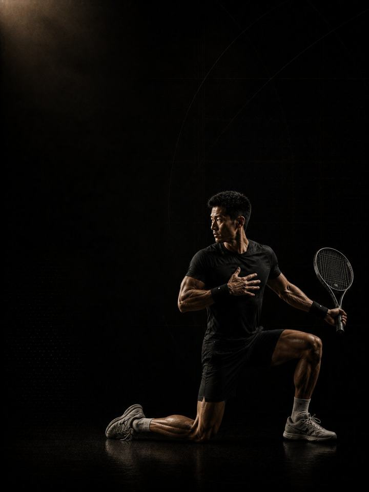

Rotational · Restore
Let the shoulder and elbow recover properly, then rebuild the whole athlete for next year.
- Built forpadel, tennis and squash players after the season
- Training days3 gym days a week in the off-season, or a 2-day short version
- Session length48–60 minutes
- Equipmentfull gym, plus a med ball, sled and cones if available
- Formatmobile PDF, every exercise linked to a demo video
- Get all four blocks of this sport family for 119.990 KD (159.960 KD if bought separately).
- Upgrade to 1:1 coaching within 30 days and this price comes off your first month.
The store opens soon. For now, Buy opens an Instagram message and you receive the PDF there.
Who it's for
Padel, tennis and squash players whose season has just ended. A racket season finishes with a shoulder that has thrown thousands of times and an elbow that has absorbed every one of them. Tendon does not recover during a season, because the season never stops asking.
This block is the only window where it can. It opens with four weeks in which nothing goes overhead at all, a real unloading of the tissue that has taken the most, while the rest of the body keeps training. Then it rebuilds: general strength and muscle first, overhead and rotation brought back gradually. Block 1 next year then starts on a shoulder that is fresh, not one that has never been allowed to settle.
Where it sits in the year: Block 4 of 4 in the Rotational family. Base, Build, Compete, Restore, then back to Base. Run it as soon as your season ends.
Your week
Take the first week off entirely. Before week 1, take five to seven days with no structured training and no racket at all. This is prescribed, not permission.
| Sun | Mon | Tue | Wed | Thu | Fri | Sat | |
|---|---|---|---|---|---|---|---|
| Off-season, 3 days | Day 1 | Rest | Day 2 | Rest | Day 3 | Rest | Rest |
| Short version, 2 days | Day 1 | Rest | Rest | Day 2 | Rest | Rest | Rest |
Three non-consecutive days is the standard version. Sessions are longer than in season but far lower in intensity.
Every session runs the same way:
- Warm-up, 8–10 min. The same sequence every session. Glutes, hips and shoulders switched on.
- Speed and power, 12–15 min. Not in weeks 1–4. Full recovery between sets, and the set stops the moment quality drops.
- Strength, 20–25 min. The compound lifts, with two to three minutes between sets.
- Tissue work, 8–10 min. Nordics, Copenhagens, calves and carries. Last, and never cut.
How the 12 weeks progress
Tendon adapts on a longer clock than muscle, and it only remodels when the demand comes down. A racket season gives it no such window, which is why shoulder and elbow problems in these sports so often last for years rather than weeks. This block builds one on purpose: volume climbs first, load second, overhead last.
| Weeks 1–4 | Weeks 5–8 | Weeks 9–12 | |
|---|---|---|---|
| Phase | Tissue repair | Hypertrophy | Overhead tolerance |
| Goal | Let shoulder and elbow tissue recover from overhead load | Build muscle across the whole body | Restore tolerance to overhead throwing and racket loads |
| Looks like | No overhead pressing, no throwing, no racket. The rest of the body keeps training. | Free weights return and overhead work reappears in its gentlest form. The muscle-building phase of the year. | Throwing and court speed come back on a shoulder that has had eight weeks to prepare |
| Working sets a week | 54 | 60 | 65 |
| Average effort | RPE 6.1, about 4 reps in reserve | RPE 7.0, about 3 in reserve | RPE 7.6, about 2.4 in reserve |
| Landings a week | 0 | 100 | 72 |
| Throws a week | 0 | 0 | 66 |
RPE is effort rated from 1 to 10. RPE 7 means about 3 reps left in the tank. Working sets exclude the warm-up.
Deload weeks: weeks 6 and 12 are lighter. Week 12 sets you up to start Block 1 fresh instead of tired.
The rules that make it work
- Take the week off first, and put the racket down. Five to seven days with no training and no hitting. For racket players, the hitting matters more than the training.
- Weeks 1–4 have nothing overhead. Deliberately. No overhead pressing, no throwing, no serving. This is the only unloading window the shoulder gets all year, and skipping it is why racket shoulders take years rather than weeks to settle.
- Volume before load, load before overhead. Reps climb in weeks 1–4, weight climbs in weeks 5–8, and throwing returns in weeks 9–12. Reversing that order is how off-seasons produce shoulder injuries.
- Fix one thing properly. Shoulder, elbow or hip: pick the one that troubled you and run the matching AXIS corrective program alongside weeks 1–8. The block leaves room for exactly that.
- Finish rested, not wrecked. Week 12 should leave you ready to start Block 1 strong. An off-season that ends in exhaustion has defeated its purpose.
- A jump number is the cheapest fatigue test there is. From week 5, three standing broad jumps at the start of every Day 1, keeping the best. More than 10% below your own rolling average means reduce that day: drop the power work and one set from each lift.
- Count landings. None in weeks 1–4; the warm-up uses calf raises instead. From week 5, keep the week under about 100 landings, warm-up hops included. Sport practice counts on top.
Terms
- Block: 12 weeks. This program. One block develops one set of qualities to a set standard.
- Phase (mesocycle): 4 weeks. Each one targets one quality. Four weeks is a choice, not a rule. The length follows the goal.
- Training week (microcycle): where effort climbs, sets are added and the deload lands.
- Training year (macrocycle): four blocks in order (Base, Build, Compete, Restore), about 48 weeks.
How you'll measure progress
You retest in the deload weeks, 6 and 12. The weekly broad jump starts in week 5, once jumping returns.
What good progress looks like
- Weeks 1–4: the shoulder and elbow quieten down, often for the first time in months. The training feels easy because it is meant to.
- Weeks 5–8: strength and muscle return quickly, and the gap in external-rotation strength between sides starts closing.
- Weeks 9–12: throwing and rotation come back and feel better than they did mid-season.
Block done when: the shoulder is quiet, the elbow grips without complaint, and the legs are rebuilt. The aim is to arrive at Block 1 fresh, symmetrical and out of pain, not in career-best shape. That is what next year is for.
Respect the week
Count everything: sport, gym and sleep. Sudden jumps in weekly workload are the most reliable predictor of injury in amateur sport. Protect 7–9 hours of sleep. It is the most powerful performance tool available, and the cheapest.
The science
Every program in the library is built on published research, and how strong that research is gets stated, not implied. Where the evidence is limited, the page says so.
| Finding | Source | What it does not show |
|---|---|---|
| Strength training cuts sports injuries to under a third of the control rate. Stretching does not reduce them. | Lauersen, Bertelsen & Andersen, British Journal of Sports Medicine 2014. Meta-analysis of 25 RCTs, 26,610 participants. PMID 24100287 | Risk ratio 0.32 for strength training and 0.96 for stretching. The trials varied a lot, and dose was not standardised. |
| Every sensible prescription beats not training. Heavier loads rank highest for strength. Multiple sets rank highest for muscle size. | Currier, McLeod, Banfield et al., British Journal of Sports Medicine 2023. Network meta-analysis, 178 strength and 119 hypertrophy studies. PMID 37414459 | The differences between prescriptions were small, and all of them worked. |
| Programs that include the Nordic hamstring exercise roughly halve hamstring injuries. | van Dyk, Behan & Whiteley, British Journal of Sports Medicine 2019. Meta-analysis, 15 studies, 8,459 athletes. PMID 30808663 | Risk ratio 0.49, or 0.55 with the high-risk-of-bias studies removed. It measures programs that include the exercise, not the exercise alone. |
| One adductor exercise, three times a week in pre-season and once a week in season, cut reported groin problems by 41%. | Harøy et al., British Journal of Sports Medicine 2019. Cluster-randomised trial, 35 teams, 652 male footballers. PMID 29891614 | Odds ratio 0.59. Self-reported, semi-professional men's football only. Not yet repeated in women or other sports. |
What's next
After 12 weeks:
- Next year, Block 1: Rotational · Base
- One area needs work: the Corrective series
Want it built around you? One-to-one coaching through the Trainerize app: programming shaped by your goal, schedule and history, video review of your technique, and weekly adjustments. Seats are limited. DM @a_bouzubar with "COACHING".
Before you buy: get cleared first if
- You have chest pain, unusual breathlessness, palpitations or dizziness with exertion.
- You have uncontrolled high blood pressure, a known heart condition, or recent surgery.
- You are pregnant or recently post-partum. Get clearance and a tailored program first.
- You have sharp joint pain in one spot that won't settle. Start with the matching AXIS corrective program.
This program is general fitness guidance. It does not replace a medical assessment.
- Get all four blocks of this sport family for 119.990 KD (159.960 KD if bought separately).
- Upgrade to 1:1 coaching within 30 days and this price comes off your first month.
The store opens soon. For now, Buy opens an Instagram message and you receive the PDF there.